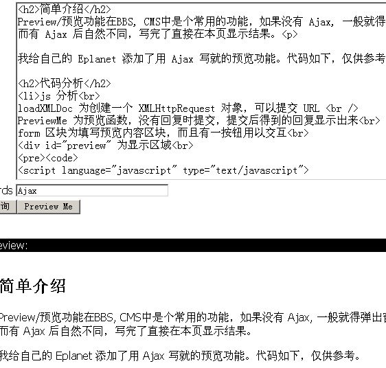

Category: Javascript Keywords: Ajax
简单介绍
Preview/预览功能在BBS, CMS中是个常用的功能，如果没有 Ajax, 一般就得弹出窗口或提交页面，挺麻烦的。而有 Ajax 后自然不同，写完了直接在本页显示结果。
我给自己的 Eplanet 添加了用 Ajax 写就的预览功能。代码如下，仅供参考。
Update
2005/4/21 将 GET 改为 POST 方法，这样能支持大于 512K 的参数。代码分析
- js 分析
loadXMLDoc 为创建一个 XMLHttpRequest 对象，可以提交 URL
PreviewMe 为预览函数，没有回复时提交，提交后得到的回复显示出来
form 区块为填写预览内容区块，而且有一按钮用以交互
<script language="javascript" type="text/javascript"> var req; function loadXMLDoc(url, parameters) { // branch for native XMLHttpRequest object if (window.XMLHttpRequest) { req = new XMLHttpRequest(); req.onreadystatechange = processReqChange; req.open("POST", url, true); req.setRequestHeader('Connection', 'close'); req.setRequestHeader('Content-type', 'application/x-www-form-urlencoded'); req.send(parameters); // branch for IE/Windows ActiveX version } else if (window.ActiveXObject) { req = new ActiveXObject("Microsoft.XMLHTTP"); if (req) { req.onreadystatechange = processReqChange; req.open("POST", url, true); req.setRequestHeader('Connection', 'close'); req.setRequestHeader('Content-type', 'application/x-www-form-urlencoded'); req.send(parameters); } } } function PreviewMe(input, response) { if (response != ''){ // Response mode message = document.getElementById('preview'); message.innerHTML = response; }else{ // Input mode url = '[% base %]/preview/'; loadXMLDoc(url,'body=' + encodeURIComponent(input)); } } function processReqChange() { // only if req shows "complete" if (req.readyState == 4) { // only if "OK" if (req.status == 200) { response = req.responseText; PreviewMe('', response); } else { alert("There was a problem retrieving the XML data:\n" + req.statusText); } } } </script> <form><textarea name="editor" name="cms_text" rows="15" cols="100" wrap="virtual"></textarea> <input type='button' onclick="PreviewMe(this.form.editor.value,'');" value='Preview Me'> </form> <div style='margin:2em; border: 1px solid #888888;background: #000; color:#FFF;'>Preview:<br> <div id="preview" style='background: #FFF; color:#000;padding: 1em'></div> </div>- [% base %]/preview/?body= 文件
此代码块主要是用一个 CGI 接收 body 参数，经过变换打印出来。如下是我的 Eplanet 代码（片断）：package Eplanet::C::Preview; use base 'Catalyst::Base'; sub preview : Global { my ( $self, $c, $submit ) = @_; my $text = $c->req->params->{'body'}; #damn it, why i should add this $c->res->headers->header( 'Content-Type' => 'text/html;charset=utf-8' ); $c->res->output("$text"); } 1;特殊说明
这是个不完整也不完美的代码。
Catalyst 有个 Plugin::Ajax. 但是不太完美，不符合我的要求。
已经把它加到自己的 BBS 中，如果有时间给 LeoBBSx 等写个修改。
如下为一截图：
<<Previous: 如何用 minicpan 映像自己的 CPAN >>Next: 从细节处提升Perl性能
Options: +Del.icio.us
Related items- Ajax && encodeURIComponent < 2005-05-15 15:31:00 >
- Ajax 网址备忘 < 2005-04-08 19:44:12 >
Copyright 2004-2005 All Rights Reserved. Powered by Eplanet && Catalyst 5.62. - [% base %]/preview/?body= 文件